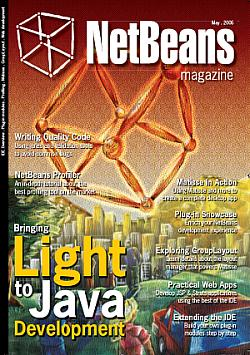
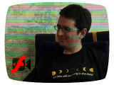
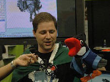

2006 was a productive year for NetBeans. It was a year of major releases and debuts. NetBeans traveled around the world and picked up a few new languages. Partnerships were formed; community involvement and outreach expanded. A book was published and a birthday celebrated. And amid all the activity, NetBeans acquired a new image. Join us for a look back at highlights from a year of achievements.
January
NetBeans Podcasts
Evangelist Roman Strobl launches the NetBeans Podcasts. In the first episode, he talks about the NetBeans ìLook and Feelî competition, using Matisse in NetBeans Platform, and the upcoming NetBeans WorldTour.
NetBeans Evandalists
ìThey are cool. They are witty. Spreading Java technology is their mission. NetBeans is their IDE.îRuth Kusterer introduces the world to the animated quirks of the NetBeans Evandalists.
February
Bring on the Releases: NetBeans 5.0
The first group in a slate of releases scheduled for 2006 are made
available: the NetBeans IDE 5.0, NetBeans Platform 5.0, NetBeans
Mobility Pack 5.0 and NetBeans Profiler 5.0.
March

NetBeans IDE Blue J Edition
Sun Microsystems and the University of Kent collaborate to groom the next generation of professinal developersóthey announce the NetBeans IDE/BlueJ Edition. The new edition offers a seamless migration path for students transitioning from educational tools to a full-featured, professional IDE. The NetBeans IDE-BlueJ edition is later released in July.NetBeans IDE 5.0 Localizations
The NetBeans 5.0 release becomes available in Simplified Chinese and Japanese.April
Enterprise Development Tool Project Open-sourced
Sun Microsystem announces plans to open-source major elements of the Sun Java Studio Enterprise as a project on NetBeans.org. The new project will be released as the NetBeans Enterprise Pack.NetBeans Community Chat
NetBeans writers, evangelists and enthusiasts congregate online for the first ever NetBeans community chat!
May

NetBeans Day & JavaOne in San Francisco
NetBeans Day in San Francisco gets bigger and better as over 800 developers squeeze into the halls of the Argent Hotel. NetBeans experts provide demos of the 5.0 IDE and the 5.5 Beta version. NetBeans Day San Francisco also marks the completion of the 2005 NetBeans World Tour which started in Beijing in September. Watch the recap!
NetBeans IDE Field Guide, 2nd Edition
The reviews are in and the verdict for the second edition of the NetBeans IDE Field Guide? ìÖhighly recommended.î And readers and NetBeans fans agree. 400 copies are distributed at JavaOne, and the Field Guide still ranks near the top of the bestsellersí list at the conference.NetBeans Community Awards Winners
They evangelize, blog, contribute code and bug fixes, build modules, write articles, localize, and so much more. They are ìThe Most Dedicated NetBeans Community Membersî. And the winners, as decided by their fellow community members, are: Ramon Ramos (pictured), Wade Chandler, David Strupl, and Tom Wheeler. They receive new Ultra 20 workstations and certificates signed by Java celebrities.
NetBeans Magazine Debut
NetBeans launches the NetBeans Magazineóa handy resource filled with information for beginning and seasoned programmers. The first issue showcases a wide selection of IDE and extension features, from desktop and web development to plug-in module creation. A second issue is published in November.NetBeans 5.5 Beta Released
The NetBeans IDE 5.5 Beta is made available. The release also includes
the Mobility Pack 5.5 Beta, Enterprise Pack 5.5 Early Access, and
NetBeans Profiler 5.5 Beta.
June
NetBeans TV!
Another first for NetBeans: Itís NetBeans TV! In the pilot episode, NetBeans Field Guide author Patrick Keegan sits down with evangelist Roman Strobl to discuss the recently published second edition and the IDE.July
NetBeans 6.0 Milestone 1 Build
NetBeans announces the release of the first milestone build for NetBeans IDE 6.0 and NetBeans Profiler 6.0. The build provides a fuller set of features, more stabilization time for new features introduced in the trunk, and more time for community feedback. More milestones are released later in the year.August
NetBeans Mobility Pack Open-sourced
NetBeans Mobility Pack opens its code to the community.
NetBeans on Java Magazin Cover
Wie gut ist Dein Deutsch?
NetBeans makes the cover of the August issue of the German-language Java Magazin.
The issue features interviews with NetBeans director Jan Chalupa and evangelist Tim Boudreau.
NetBeans 5.0 Localization Continues
NetBeans 5.0 is released in two more languages: Russian and Korean, adding to the versions of the IDE available in English, Japanese, and Simplified Chinese. The Russian version is contributed solely by Maxym Mykhalchuk, one of the founders of the NetBeans Translation Project.September
NetBeans WorldTour 2006 - 2007
14 cities (and growingÖ), and all the NetBeans you want. The NetBeans WorldTour returns for a new season and the first stop is in Seattle, Washington. The WorldTour 2006 is organized around Sun Tech Days; NetBeans fans get the latest about NetBeans and also about Sun Microsystems.NetBeans Wins JDJ Editors' Choice Award
Editors at Java Developer's Journal are asked to nominate three products that have had a major impact on the Java community. Contributing Editor Jason Bell writes of the NetBeans 5.0 IDE: "ÖI've now become a convert. Ö"October
NetBeans Turns Eight!
On October 26, 1998, a start-up company in the Czech Republic launched NetBeans Developer 2.0, and the world, not to mention an American tech giant called Sun Microsystems took notice. Java and the IDE world have not been the same ever since.
NetBeans 5.5 and the Packs
NetBeans announces the release of NetBeans IDE 5.5. But the new version of the IDE comes with extra features in the form of five add-ons: the Mobility Pack, Profiler, Enterprise Pack, C/C++ Pack (Beta 3) and Visual Web Pack (Technology Preview).NetBeans.org Redesigned
The NetBeans.org website gets a makeover. The cleaner and friendlier look allows users to easily find and download code and releases, search for tutorials, NetBeans news and all the info they need.NetBeans Strategic Partner Program
 We love to know what other companies are doing with NetBeans products.
The NetBeans
Strategic Partner Program is launched to recognize companies that
are building
add-ons for the NetBeans platform and recommending NetBeans to their
developer communities. Strategic partners include Amazon,
JBoss, Collabnet, Sprint
and more.
We love to know what other companies are doing with NetBeans products.
The NetBeans
Strategic Partner Program is launched to recognize companies that
are building
add-ons for the NetBeans platform and recommending NetBeans to their
developer communities. Strategic partners include Amazon,
JBoss, Collabnet, Sprint
and more.
NetBeans User Group in Munich
The very first NetBeans User Group (NUG) meeting is held in Munich, Germany. NetBeans experts and NetBeans users gather to exchange knowledge and get feedback about the IDE.November
Java Open-sourced
Sun's Java Development Kit (JDK) is open-sourced.Wanted: NetBeans Dream Team
There are NetBeans users and then there are NETBEANS USERS. They blog frequently about NetBeans, write apps and plug-ins, answer questions on mailing lists, help with localization, attend NetBeans events, suggest creative ways to promote NetBeans, and much more. How difficult would it be to find a group of users like these? Not very. The selected members will be announced in January 2007.December
NetBeans 5.5 Multilingual Release
The push to make NetBeans a multi-language platform continues with
the release of the NetBeans
5.5 Multilingual in Japanese,
Simplified Chinese, and for the very first time, Brazilian Portuguese,
a version localized by the
Brazilian developer community.
NetBeans Visual Web
Pack 5.5
NetBeans C/C++ Development Pack 5.5
The NetBeans Visual Web Pack and the NetBeans C/C++ Development Pack are released as add-ons to the NetBeans IDE. Visual Web Pack allows users to rapidly and visually build standards-based web applications, and the C/C++ Development Pack provides support for C/C++ project types.
